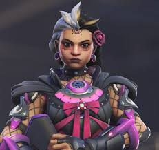

this is D.va she is my 2nd favorite character because she can fly and explode.

details
D.vas age in overwatch 1 was 19 but now that its overwatch 2 she is 21 and her birthday is june 22.
Widowmaker is my #1 favorite character because she has a grappling hook and a sniper.
widowmakers age in overwatch 1 was 33 but now that its overwatch 2 she is 35 and her birthday is November 19.
this is D.va she is my 2nd favorite character because she can fly and explode.
D.vas age in overwatch 1 was 19 but now that its overwatch 2 she is 21 and her birthday is june 22.
sombra is my 3rd favorite character because she can teleport,hack,and turn invisible.
Sombras age in overwatch 1 was 30 but now that its overwatch 2 she is 32 and her birthday is December 31st.
Mercy is my 4th favorite character because she can revive people,she can do angelic descent and she can do her ult its called Valkyrie.
Mercys age in overwatch 1 was 39 but now that its overwatch 2 she is still 39 and her birthday is May 13th.
echo is my 5th favorite character because she can transform into another player that is not on there team.
Echos age in overwatch 1 was 12?! but now that its overwatch 2 shes 14 and her birthday is February 5th.
illari is my 6th favorite character because she does something that shoots herself in the air.
illaris age in overwatch 1 was 16 but now that its overwatch 2 she is 18 and her birthday is December 21st.